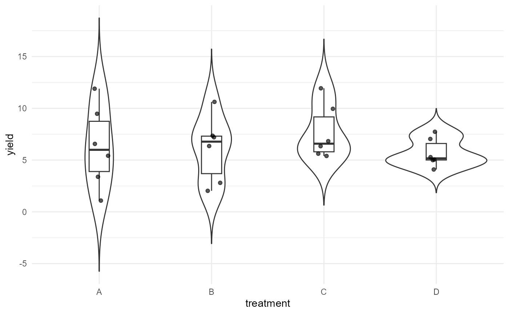
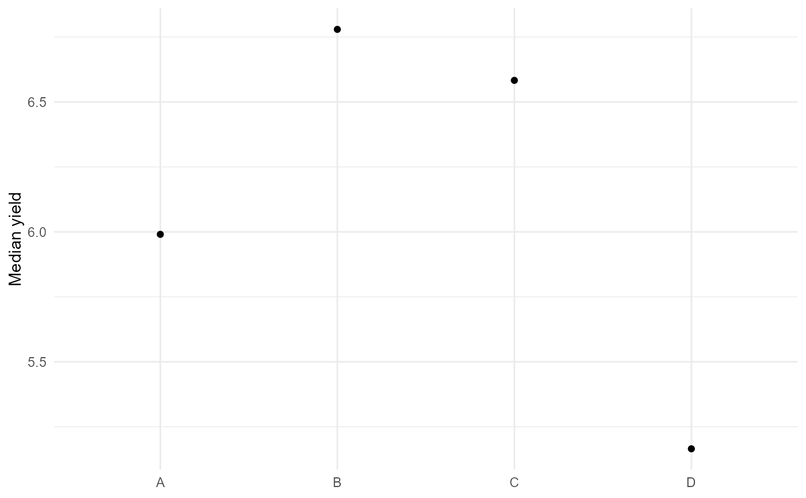
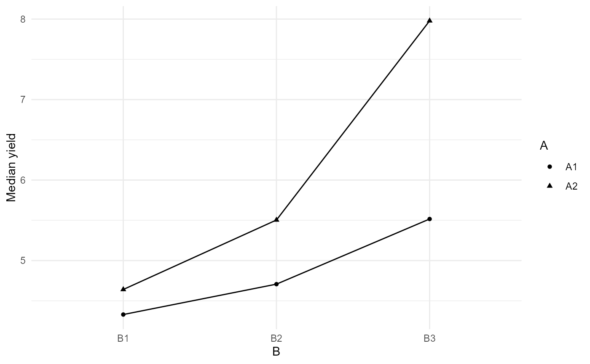

Create publication-oriented ggplot graphics
agri_plot.RdCreates observed-data, effect, interaction, missingness, or contrast plots from agriRank objects.
Usage
agri_plot(x, type = c("data", "effects", "interaction", "missing", "contrasts"), ...)Details
Static ggplot output is intentionally editable with normal ggplot2 syntax. The vignette suite documents the experimental-design logic, estimand, hypothesis, resampling structure, missing/unbalanced-data behavior, and backend-specific limitations in greater depth.
References
Pauly M, Brunner E, Konietschke F (2015), DOI: 10.1111/rssb.12073. Brunner E, Konietschke F, Pauly M, Puri ML (2017), DOI: 10.1111/rssb.12222. Konietschke F, Brunner E (2023), DOI: 10.32614/RJ-2023-029. See the package vignettes and `inst/references/agriRank-methods-verified.ris` for engine-specific verified references.
Examples
# Example 1
x<-simulate_agri("crd"); d<-agri_design(yield~treatment,x,"crd"); agri_plot(d,"data")

# Example 2
x<-simulate_agri("crd"); f<-np_crd(yield~treatment,x); agri_plot(f,"effects")

# Example 3
x<-simulate_agri("factorial"); d<-agri_design(yield~A*B,x,"factorial"); agri_plot(d,"interaction")
